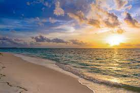

Top Seven Beaches in
Maharashtra

If you want to experience azure waters and white sands with casuarina trees head straight to Ganeshgule beach. It's clean, pristine and simply beautiful! Though the access is a bit isolated, it is just beautiful!This beach is located in a remote and quiet village of Ganeshgule. Being remote, there are not many people on the beach. So, those who love solitude would really like it. The beach itself is of around 1km stretch with small hillocks at both the ends. One can climb on the small hillock easily and enjoy the sunset. Since, it is away from main town, there is no commercialization and one can enjoy clean water, soft sand.
Kolthare beach is located in Kolthare Village, south to Murud and Ladghar, both being wonderful beaches. Those looking to escape the crowded vacation spots will find Kolthare beach a perfect attraction. It is just 20 kms away from Dapoli, towards southern coastal area. It is an unspoiled attraction perfect for beach and nature lovers. Kolthare is also known for an ancient temple dedicated to Lord Shiva. It is equidistat (approx 200 kms) from Mumbai and Pune.

These twin beaches, known as Aarey-Ware were formed due to the corner of the mountain that submerged in the sea. It is a beautiful location surrounded by mountains. Arabian sea is so serene and calm here. One peculiar thing is its black sand. Breath taking views from the hills. The drive along the Arey Ware Beach from Ganpatipule to Ratnagiri is truly amazing. The shoreline is absolutely clean & Pristine.
Kashid beach is most underrated yet very beautiful and very clean beach. Food at homestays are the best and with authentic maharashtrian style. Seafood is something one shouldn't miss here. Also water sports available at very cheap rates.It can get a bit crowded during popular vacations.
It is a clean beach with white sand. One of the good ones along the Maharashtra coastal belt. Is more popular due to the famous Ganpati temple located at the beach. Lot of homestays, resorts and hotels have sprung up near the beach. It also has lot of good food joints around. Worth a visit!
The Bhatye beach is a lovely, long stretch of a clean beach ideal for a relaxing holiday. Bhatye, a small village close to Ratnagiri city is popular for its clean and calm surroundings.It is a nice peaceful place with a long stretch of beach with tress & mountains around.
Diveagar beach is located in Raigad District of Maharashtra, which is @175 km away from Mumbai and 160 km away from Pune. Diveagar is @ 20 km away from Shrivardhan Beach. Generally tourists will plan Harihareshwar to Shrivardhan to Diveagar trip as 2 or 3 days Itinerary based on time availability. Diveagar has gained popularity as an ideal weekend destination for Mumbai and Pune tourists as it is nearest beach destination with peaceful atmosphere.